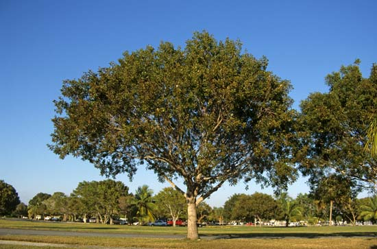
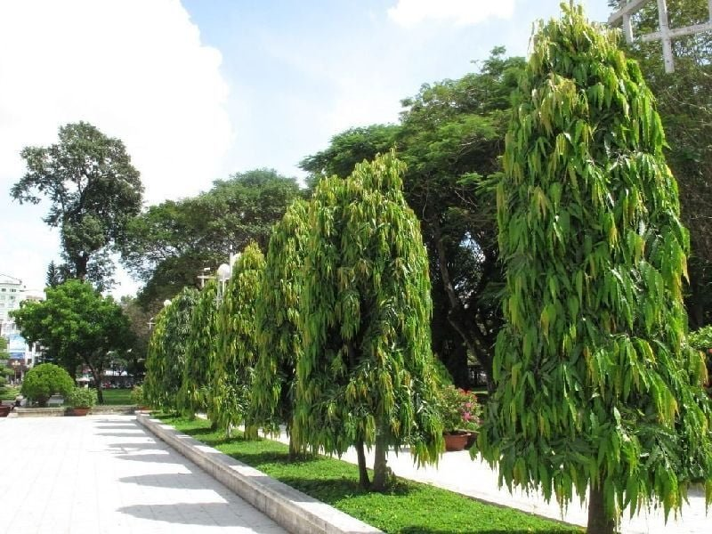
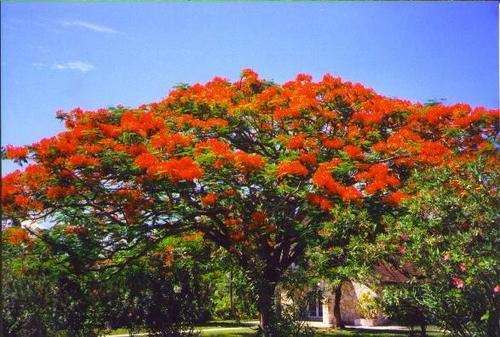
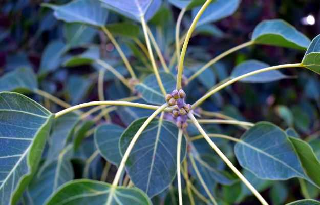
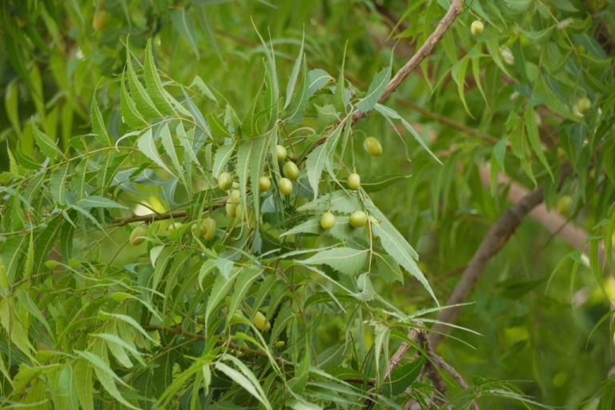

Sr No. |
Name |
Image |
Scientific Name |
About |
| 1 |
INDIAN MAHOGANY |
 |
Swietenia Mahogani |
This tree is famous among Music fans as the trunk of this tree is used to make furniture and musical instruments. This one is famous in the world for its durability and beautiful color tones.
It is also an important medicinal plant and is widely used in Ayurveda. The close relative of this one is Chikrasi which is scientifically known as Chukrasia Tabularis. |
| 2 |
ASHOKA TREE |
 |
Saraca Arosa |
This one is popular for its thick foliage which is evergreen and has fragrant flowers and a pointed top. This one has scenic properties as it has beautiful flowers that bloom and blossom in the months of February to April and are famous for their bright yellow and orange colors. |
| 3 |
GULMOHAR TREE |
 |
Delonix Regia |
This tree is famous among Indians as the symbol of Love. The Gulmohar Tree has a wide canopy and its flowers are large and flamboyant which are orange in color and because of these features it has high ornamental value. |
| 4 |
PEEPAL TREE |
 |
Ficus Religiosa |
It is an evergreen tree that is primarily worshipped in the Indian subcontinent by various religions, mainstream or tribal. This one holds a high value among all the non-atheists. This one could be recognized by the heart-shaped leaves which dance when the summer breeze gushes through them. |
| 5 |
BANYAN TREE |
 |
Ficus Benghalensis |
It is the national tree of India and is famous for its aerial prop roots. This one holds high value in the Hindu and the Buddhist faiths. It can be recognized from a big canopy. It represents life and fertility. |
| 6 |
SAL TREE |
|
Ficus Religiosa |
It is an evergreen tree that is primarily worshipped in the Indian subcontinent by various religions, mainstream or tribal. This one holds a high value among all the non-atheists. This one could be recognized by the heart-shaped leaves which dance when the summer breeze gushes through them. |
| 7 |
NEEM TREE |
 |
Azadirachta Indica |
Neem is popular for its medicinal properties and thus finds its way into a variety of shampoos, face wash, soaps, ointments, etc most of which claim to treat acne. Its also used as a pesticide and can treat pox virus as well. |